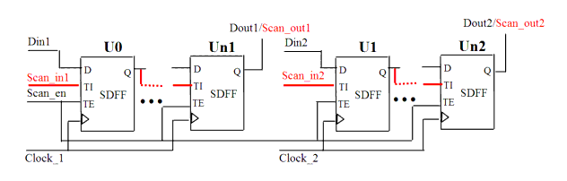

| Description | This rule fires when Leda detects scan chains for different clock domains in the same module. To improve the performance of scan insertion and timing analysis, separate the scan chains for different clock domains. |
| Policy | DESIGN |
| Ruleset | DFT |
| Language | VHDL/Verilog |
| Type | Hardware |
| Severity | Error |
This is an example of invalid Verilog code, followed by a circuit diagram that illustrates the problem:
module ntl_dft12_top(Clock1, Clock2, Scan_en, Scan_in1, Scan_in2, Din,
Dout1, Dout2);
input Clock1, Clock2, Scan_en, Scan_in1, Scan_in2, Din;
output Dout1, Dout2;
reg net_11, net_12, net_21, net_22;
// Scan DFF - SDFF
//scan chain 1: Scan_in1 -> Dout1, one clock domain in this scan chain
SDFF U0(.D(Din1), .CP(Clock1), .TI(Scan_in1), .TE(Scan_en), .Q(net_11));
SDFF U1(.D(net_11), .CP(Clock1), .TI(net_11), .TE(Scan_en), .Q(net_12));
SDFF U2(.D(net_12), .CP(Clock1), .TI(net_12), .TE(Scan_en), .Q(Dout1));
// NTL_DFT12 fires -- Scan chain 2 Scan_in2 -> Dout2, another scan clock
// in this scan chain
SDFF U3 (.D(Din2), .CP(Clock2), .TI(Scan_in2), .TE(Scan_en),
.Q(net_21));
SDFF U4 (.D(net_21), .CP(Clock2), .TI(net_21), .TE(Scan_en),
.Q(net_22));
SDFF U5 (.D(net_22), .CP(Clock2), .TI(net_22), .TE(Scan_en), .Q(Dout2));
endmodule
